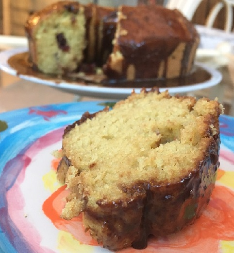

Semolina Cake
Ingredients:
-
1 Cup of Milk
-
3 tbsp of Plain Yogurt
-
1 Cup of Semolina
-
1 Cup of Sugar
-
1/2 Cup of Vegetable Oil
-
1 Cup of Plain Flour
-
2 tsp of Baking Powder
-
A Pinch of Salt
-
1 tsp of Vanilla Extract
-
Optional: Raisins or Cranberries
-
Some Butter for the Tray
-
Chocolate Sauce: Chocolate, 5 tbsp of Milk, 1 tbsp of Powdered Sugar

Method:
-
First, pour semolina into a clean bowl and stirring, pour in milk in parts.
-
Add sugar, vegetable oil. For the oil to "enter" the dough, you just have to stir it longer.
-
"Forget" about the dough for an hour. The semolina will swell.
-
Prepare the oven in advance, grease the baking dish with butter, because then you will need to act
quickly since the baking powder (or its substitutes) will instantly react. Add flour mixed with fine
salt (large salt will not have time to dissolve) and baking powder into the milk mixture.
-
You can now add the vanilla and raisins, cranberries or other fillers into the mixture.
-
Mix the dough and transfer it to the prepared form.
-
Put in the oven for 45 minutes and once it is done, it needs to be removed, cooled and allowed to
stand for several hours, so it will look more neat when cut.
-
For the chocolate sauce, mix together the chocolate, powdered sugar and milk and mix together in a
pot on the heated stove.